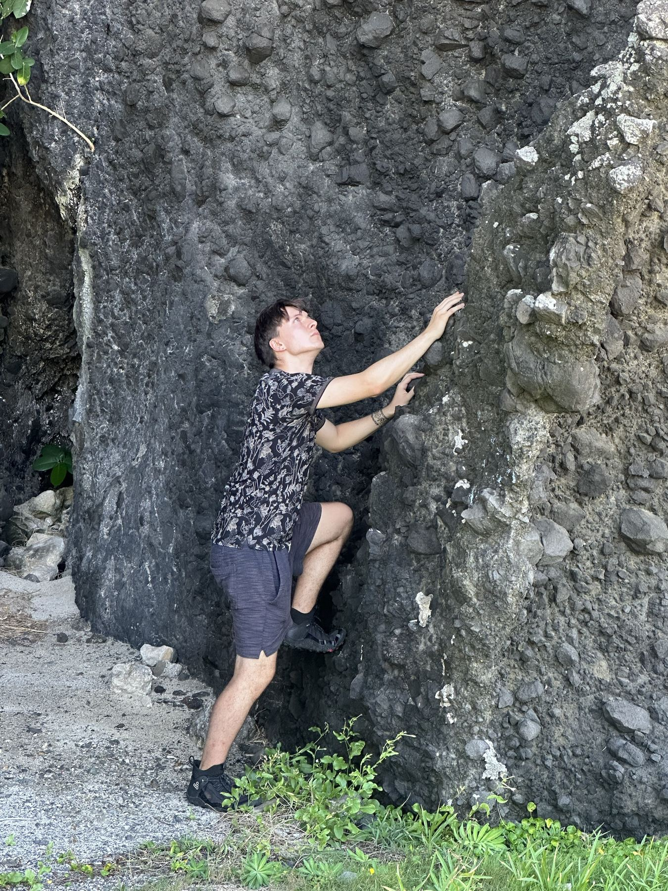

Contact
Let's worktogether
I welcome enquiries about research collaborations, consultancy, mentoring, speaking invitations, and media appearances. Based in London, working internationally.
Download my CV
My full curriculum vitae: publications, grants, teaching and service in one PDF.
Find me
Email is quickest. I usually reply within a few days.
- Emailmaciej.pawlik.24@ucl.ac.uk
- ORCID0009-0009-6585-4852
- Google ScholarMaciej Pawlik
- LinkedInmaciejpawlik2000
- UCL ProfileAcademic profile
